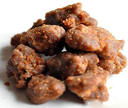
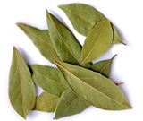
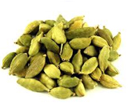
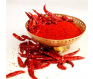
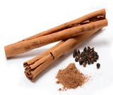
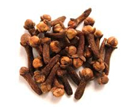
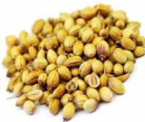
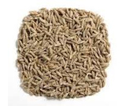
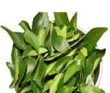

THE USES AND BENEFITS OF VEGETABLE SPICES
| Spices | Uses | Benefits | Photo |
| Asafoetida (Hing) | It is used for seasoning food especially snacks and has some medicinal uses. | It is a good remedy for whooping cough and stomachache caused due to gastric problem. |  |
| Bay leaf (Tezpatta) | It is used in cooking to add a specific flavor to food and also has some medicinal properties. | Bay leaf oil possesses antifungal and anti bacterial properties. |  |
| Cardamom (Elaichi) | It is used in most of the Indian and other sweet dishes to give a good aroma and flavor. It is also used widely in pharmaceutical sector. | It helps in controlling bad breath and digestive disorder. A whole cardamom chewed after meal is good for coping with diabetes. |  |
| Chili (Lalmirch) | It is a main ingredient used for adding hot flavor to the food. | The antioxidants present in hot pepper help in coping up with cholesterol. It also helps in burning calories. |  |
| Cinnamon (Dalchini) | It is used mainly for seasoning food and preparing masalas and has medicinal uses too. | It supports natural production of insulin and reduces blood cholesterol. |  |
| Clove (Laung) | It is used as a cooking ingredient mainly for seasoning or preparing Masalas. | Clove oil is beneficial for coping with toothache and sore gums. It is also beneficial remedy for chest pains, fever, digestive problems, cough and cold. |  |
| Coriander (Dhaniya) | Coriander leaves as well as coriander seeds are used in cooking and has some medicinal uses too. | It can be used externally on aching joints and rheumatism and is also good for coping up with soar throat, allergies, digestion problems, hay fever etc. |  |
| Cumin (Zeera) | It is used for cooking and also possesses medicinal properties. | It is a good source of iron and keeps the immune system healthy. Water boiled with cumin seeds is good for coping up with dysentery. |  |
| Curry leaves (Curry patta) | It us used as a main ingredient for seasoning in some countries and has many medicinal uses. | Its leaves are beneficial for reducing blood sugar. Each part of the paint provides some benefit or the other. The dried leaves are extensively used in herbal medicines. |  |